CoffeeScriptで理解する『ラムダ計算入門』

[ PR ]
関数型言語の基板になっているラムダ計算
Twitter社が関数型言語Scalaを導入したことで関数型言語が一躍注目されましたが、ブームと同時にラムダ計算について勉強する方が増えました。
個人的には、ラムダ計算はあくまでラムダ計算であって、現在の関数型言語とはちょっと離れてしまっているという印象です。
しかし、関数型言語の持つ性質とラムダ計算がルーツを同じくしているのは事実なので、少し触れておく価値はあると思います。
ラムダ計算とは
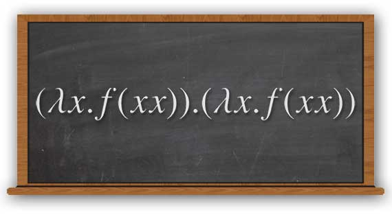
まずラムダ計算とは何かというと、関数への引数の評価と関数適用だけで計算をしようというものです。
「え、それだけで一体何が計算できるの？」、と思うかもしれませんが、自然数、算術、タプル、リスト、パターンマッチ、再帰などが定義でき、プログラミングの数学的モデルとしての役割を担っています。
今はまだ信じられないかも知れませんが、読み進めていくとその理由がわかります。
基本と書き方
ラムダ計算の基本は、関数です。
これは、JavaScriptでいう下のようなものです。
function (a){ return b; }この書き方を、
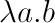
に書き直すと、ラムダ記法（ラムダ計算で使用する記法）になります。（λ＝ラムダ）
つまり、
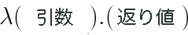
と書き直せばラムダ記法になるということです。簡単ですね。
関数適用
JavaScriptで関数を使う（適用する）場合は、
function f(a){ return b; }
f(c);という感じになりますよね。これを１行で書くとすると、以下のようになります。
(function (a){ return b; })(c);これを以下のように書き直せばラムダ記法になります。
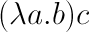
つまり、aを引数に取りbを返す関数に、cを適用するという意味になります。
ラムダ記法のBNF
ラムダ記法をすべて解説すると長くなるので、以下に拡張BNFでの定義を書いておきます。
id: "^[a-z]$"
expr: expr exprs
| "λ" id expr
| id
;実際には以下のような省略形も使います。
TRUE = λt.λf.t
FALSE = λt.λf.f
PAIR = λa.λb.λf.fab
FIRST = λf.f TRUE
SECOND = λf.f FALSE
0 = λs.λz.s
1 = λs.λz.s(z)
FIRST(PAIR 0 1) # 0
SECOND(PAIR 0 1) # 1
CoffeeScriptを使うとラムダ式っぽく見える
実は、CoffeeScriptを使うとラムダ記法そっくりになります。
((a)->b)(c)もちろん意味は先程の
(function (a){ return b; })(c);と同じです。JavaScriptユーザの方のために、適宜説明するので安心して下さい。
(メモ) これ以降をより理解するには
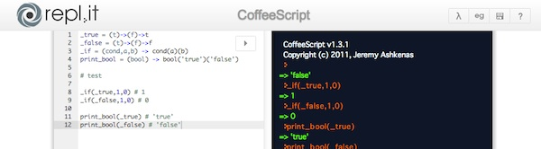
これ以降はかなり内容が複雑になるので、もしかするとよくわからないかもしれません。
なので、これ以降の話をより理解するには、repl.itのような対話シェルを使って、ぜひ自分自身でコードを入力してみてください。
ただ読むよりはよく分かるんじゃないかと思います。
ラムダ計算での true, false, if
記法がわかったところで、早速、ラムダ計算でifがどのように実現されているかを見てみたいと思います。
ラムダ計算でいうifとは、CoffeeScriptでいうと、次のようなものです。
_if(cond,a,b)
# test
_if(true,1,0) # 1
_if(false,1,0) # 0ニュアンスは、「もしcondがtrueならば、aを返し、condがfalseならばbを返す」という感じです。
ちなみに、もちろんですが以下のような実装ではありません。
_if = (cond,a,b) -> if cond then a else b
# test
_if(true,1,0) # 1
_if(false,1,0) # 0ラムダ計算にはもちろんifはないですし、trueやfalse自体も定義されていないので、このコードはラムダ計算では実現不可能です。
実際どうやって実現しているかをCoffeeScriptで再現すると、以下のようになります。
- (a)->(b)->c はJavaScriptの function(a){ function(b){ return c; } }
_true = (t)->(f)->t
_false = (t)->(f)->f
_if = (cond)(a)(b) -> cond(a)(b)
print_bool = (bool) -> bool('true')('false')
# test
_if(_true)(1)(0) # 1
_if(_false)(1)(0) # 0
print_bool(_true) # 'true'
print_bool(_false) # 'false'なんだか凄いことになっていますね。ですがちゃんと要件を満たしています。
しかも、上記のprint_bool関数を使えば、ちゃんと_trueと_falseを文字列として表示できています。
仕組み
実は、print_boolにその秘密が隠されています。
print_bool = (bool) -> bool('true')('false')ちょっと見慣れない書き方ですが、
bool('true')('false')というのは次のように説明できます。
# bool('true')は関数を返す。
f1 = bool('true');
# 返ってきた関数にさらに引数を渡す。
f1('false');
# 合わせると以下になる ＝ boolは「関数を返す関数」
bool('true')('false')以上を踏まえると、次のことが分かります。
- _true は「関数を返す関数」で、２回関数適用されると、１回目の引数を返す。
- _false は「関数を返す関数」で、２回関数適用されると、２回目の引数を返す。
ということになります。実際にtrueの実装を分かりやすく書き直すと、
_true = (a) -> ( (b) -> a )というようになり、実際に２回関数適用された場合に、１回目にもらった引数を返すという実装になっています。
つまり、trueとfalse自体にifの機能をもたせているということですね。
これをラムダ計算に直す
最後に、先程のプログラムをラムダ計算に直して完了です。
（※）
これで、ラムダ計算でtrue,false,ifを実現することができました。
（※ ラムダ計算の abc はCoffeeScriptでいう a(b)(c) の意味。同様に (λa.b)cd は ((a) -> b)(c)(d) となる。）
ラムダ計算の本質
前項のtrueとfalseのように、ラムダ計算では様々な概念を定義できますが、何故そんなことが出来るのでしょうか。
実は、CoffeeScriptでもちゃっかり使った関数を返す関数＝『高階関数』と、クロージャという概念が含まれているからです。
今回はこれらのことには深く触れませんが、このエッセンスを含んだ言語が関数型言語ということになります。
ということは、JavaScriptは関数型言語の性質をある程度備えているということになりますね。
整数と加算・乗算
ところで、今までの説明で数字を使っていましたが、ラムダ計算にはもちろん数字はありません。
整数の定義の１つは次のようになります。
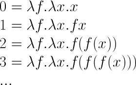
これは、チャーチ数の定義そのものです（英語版Wikipedia:Church_encoding#Church_numerals）。
概念だけでは分かりづらいので、より実践的にすると下のコードになります。
_0 = (f)->(x)->x
_1 = (f)->(x)->f(x)
_2 = (f)->(x)->f(f(x))
_3 = (f)->(x)->f(f(f(x)))
add1 = (a)-> a+1
print_num = (n) -> n(add1)(0)
print_num(_0) # 0
print_num(_1) # 1
print_num(_2) # 2
print_num(_3) # 3fを『1加える関数』、xを0とすると自然数になるというのがよく分かりますね。
実際のチャーチ数はfとxは定義しないのですが、そのことについて詳しくは他の文献を見て下さい。
加算と乗算
加算と乗算は次のようになります。（チャーチ数には減算もありますが、理解しづらいので省略します。）
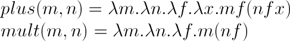
以下に理屈を説明しておきますが、特に理解する必要は特にありません（笑）
こういう理屈でラムダ計算で定義できるよ、くらいのニュアンスです。
まず加算ですが、仮にmを3、nを1とすると、
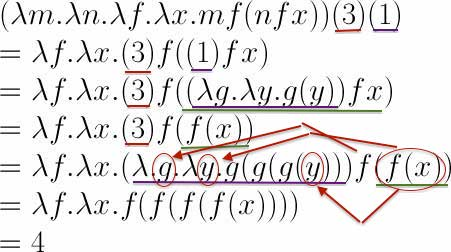
となります。つまり、fの数が足されるようなイメージだと思えばいいと思います。
次に乗算ですが、仮にmを5、nを3とすると、以下の説明になります。
- まず、np = (f)->(x)-> f(f(f(x))) である
- x = 0 のとき、次のxの値が f(f(f(x))) に変化する
- x = 1 のとき、次のxの値が f(f(f(f(f(f(x)))))) に変化する
- これが x = 5 まで続くので、最終的には fが15回連鎖することになり、結果15となる。
一応コードも置いておきます。
_0 = (f)->(x)->x
_1 = (f)->(x)->f(x)
_2 = (f)->(x)->f(f(x))
_3 = (f)->(x)->f(f(f(x)))
add1 = (n)-> n+1
print_num = (n) -> n(add1)(0)
plus = (m)->(n)->(f)->(x)-> m(f)(n(f)(x))
mult = (m)->(n)->(f)-> m(n(f))
print_num( plus(_1)(_2) ) # 3
print_num( mult(_3)(_3) ) # 9なんとなくラムダ計算が分かってきたのではないでしょうか。
組の定義とその操作
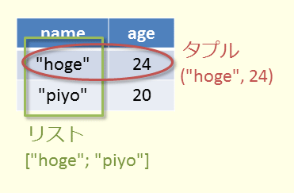
最後に、組（ペア、タプル）の定義と、組に関する操作を紹介します。
定義は以下のようになります。
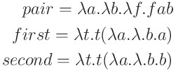
CoffeeScriptで実際に使ってみると以下のようになります。
_true = (t)->(f)->t
_false = (t)->(f)->f
_0 = (f)->(x)->x
_1 = (f)->(x)->f(x)
print_num = (n) -> n((a)->a+1)(0)
tuple = (a)->(b)->(f)->f(a)(b)
first = (t)->t(_true)
second = (t)->t(_false)
tp = tuple(_0)(_1)
a = first(tp)
b = second(tp)
print_num(a) # 0
print_num(b) # 1今までの集大成という感じですね。
tupleの定義がifとそっくりであることや、firstとsecondの定義の中にtrueとfalseの定義が含まれているのに気づいたでしょうか？
２つの要素の１つ目を取るのがtrue、２つ目を取るのがfalseでしたので、firstとsecondがこのような定義になるのは明らかです。
つまりtupleの定義の中に、要素の操作をするための機能の一部が既に含まれていることになります。
tupleの定義が関数であるのに、２つの値がきちんと維持される理由は、tupleの定義がクロージャ＝セマンティックスコープを成しているためです。クロージャについては別途調べてもらうと良いと思います。
型なしラムダ計算と型付きラムダ計算
実は、今まで紹介したものは、型なしラムダ計算と呼ばれているものです。
型なしラムダ計算に型の概念を加えたのが型付きラムダ計算です。
型付きラムダ計算はOCaml（ML）やHaskellの基板となっており、数学的モデルとしても他の数学的モデルと密接に関係しているようです。
より詳しく知りたい方は、Wikipedia:型付きラムダ計算やラムダ計算入門 - 住井英二郎 （PDF）などを参考にして下さい。
コンビネータ
最後に、少しだけコンビネータについて触れておこうと思います。
コンビネータとは、ラムダ計算を単純化したモデルとして知られています。
コンビネータとは次のものです。
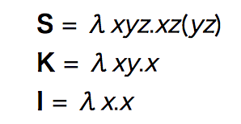
これらは基本的なコンビネータで、SKIコンビネータと呼ばれています。
詳しくは触れませんが、コンビネータの簡約の方がラムダ計算の簡約より簡単なので、コンビネータの方が計算に向いていると言われています。
関数型言語の実行モデルに採用されている例もあるようです。
詳しくはWikipedia:SKIコンビネータ計算を参照してください。
まとめ
ちょっと早足になりましたが、ラムダ計算の入門になれば幸いだと思います。
間違いや指摘などありましたらコメント欄に書き込むか、Twitterなどで指摘してください。

サイエンス社
売り上げランキング: 272,830

 | CoffeeScriptで理解する『関数型言語』 |
| CoffeeScriptで理解する『ラムダ計算入門』 |
 | コマンドの終了時に好きな音を鳴らす方法 |
 | 年代別に見るCPUの進化 ― あなたのCPUのスコア知ってますか？ |
 | 最も優れたキーボードランキング |
[ PR ]